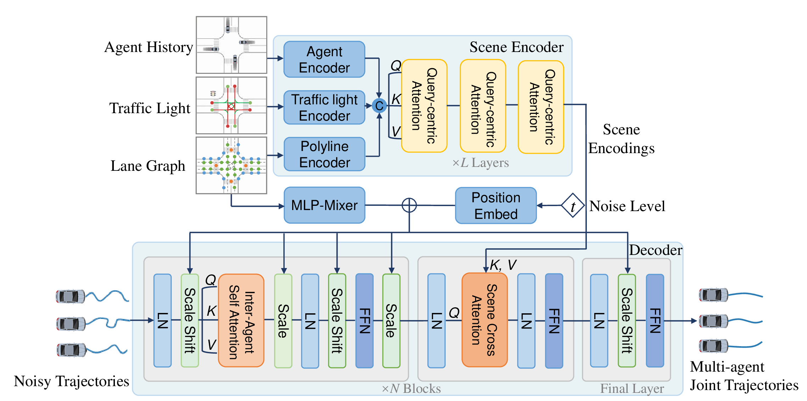
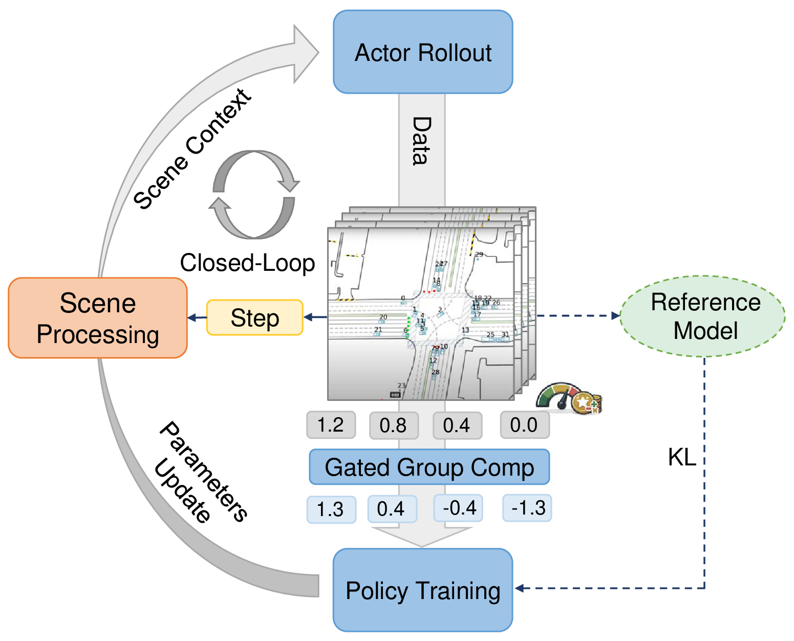
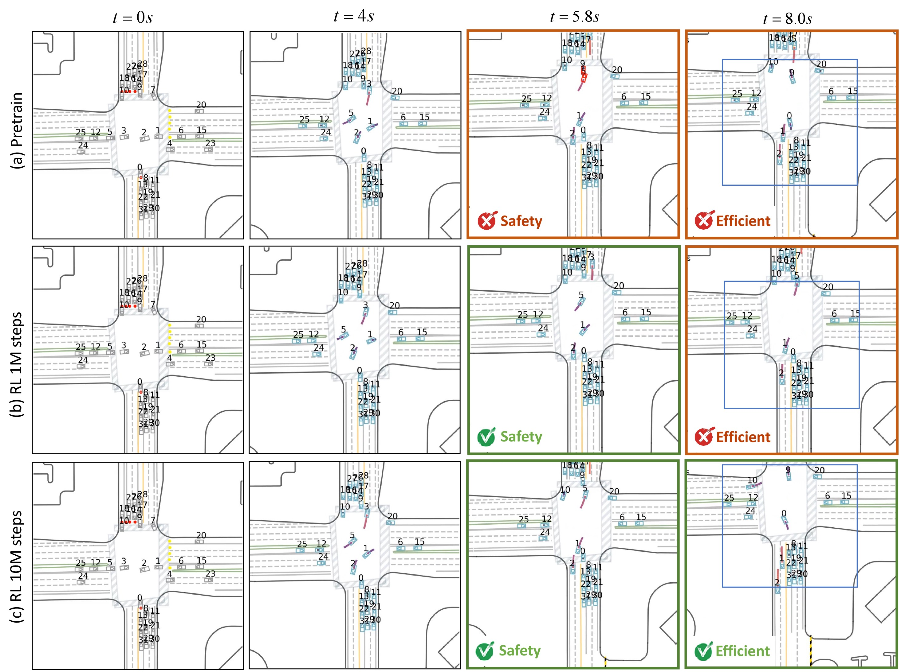

Multi-ORFT: Stable Online Reinforcement Fine-Tuning for Multi-Agent Diffusion Planning in Cooperative Driving
TL;DR: We couple scene-conditioned diffusion pre-training with online VG-GRPO post-training to improve closed-loop safety and efficiency in multi-agent cooperative driving.
Method
Two-phase coupling: diffusion pre-training learns a multimodal cooperative prior; online post-training (VG-GRPO) aligns it with closed-loop safety and efficiency.
Pre-training: Multi-Agent Diffusion Prior
Dual-path scene conditioning combines cross-attention and AdaLN-Zero for scene consistency in dense interactions.

Fig. 1 (Pre-training): multi-agent diffusion planner with dual-path scene conditioning.
Post-training: Online RL with VG-GRPO
Two-level MDP makes step-wise likelihood tractable; group-relative updates improve stability under multi-agent non-stationarity.

Fig. 2 (Post-training): online RL fine-tuning with VG-GRPO and KL anchoring to the pre-training prior.
Video Results
Three local videos are loaded from assets/videos/.
Local playback keeps anonymous review safe (no external embeds).
Closed-loop Results
Primary objectives: collision rate (CR), off-road rate (OR), average speed (AS). Secondary diagnostics: ADE, Kin.
WOMD Interactive Test Split
| Method | CR ↓ | OR ↓ | AS ↑ | ADE ↓ | Kin ↓ |
|---|---|---|---|---|---|
| TrafficBotsV1.5 | 2.74 ±0.21 | 1.79 ±0.14 | 8.03 ±0.48 | 1.68 ±0.09 | 0.26 ±0.02 |
| SMART-large | 2.22 ±0.09 | 1.58 ±0.10 | 8.34 ±0.30 | 1.30 ±0.01 | 0.21 ±0.01 |
| VBD | 2.46 ±0.14 | 1.92 ±0.18 | 8.08 ±0.52 | 1.41 ±0.02 | 0.24 ±0.01 |
| SMART-tiny-CLSFT | 2.10 ±0.10 | 1.53 ±0.12 | 8.47 ±0.44 | 1.23 ±0.03 | 0.25 ±0.02 |
| Multi-ORFT | 1.91 ±0.12 | 1.36 ±0.08 | 8.61 ±0.46 | 1.36 ±0.04 | 0.32 ±0.03 |
Values are mean ± std over repeated closed-loop evaluations in the same simulator configuration.
Effect of Post-training Strategy
| Method | CR ↓ | OR ↓ | AS ↑ | ADE ↓ | Kin ↓ |
|---|---|---|---|---|---|
| Pre-trained only | 2.02 ±0.11 | 1.68 ±0.10 | 8.36 ±0.42 | 1.28 ±0.02 | 0.25 ±0.02 |
| SFT | 1.99 ±0.07 | 1.64 ±0.06 | 8.37 ±0.36 | 1.15 ±0.015 | 0.25 ±0.01 |
| DPO | 1.95 ±0.13 | 1.58 ±0.09 | 8.15 ±0.39 | 1.33 ±0.04 | 0.27 ±0.01 |
| Offline RL | 2.16 ±0.09 | 1.82 ±0.14 | 8.98 ±0.68 | 1.37 ±0.05 | 0.26 ±0.02 |
| Multi-ORFT (Online RL) | 1.91 ±0.12 | 1.36 ±0.08 | 8.61 ±0.46 | 1.36 ±0.04 | 0.32 ±0.03 |
Qualitative: Pre-training vs. Post-training

Example rollout: online post-training improves conflict resolution and recovers decisiveness with longer training.
Stability: Map Consistency (AdaLN-Zero)


Scene-conditioned modulation improves boundary adherence in dense interactions, reducing off-road events.
Ablations
Compact summaries. Full details and protocols are in the paper PDF.
AdaLN-Zero
| Setting | CR ↓ | OR ↓ | AS ↑ | ADE ↓ | Kin ↓ |
|---|---|---|---|---|---|
| w/o AdaLN-Zero | 2.11 | 1.99 | 8.40 | 1.30 | 0.26 |
| with AdaLN-Zero | 2.02 | 1.68 | 8.36 | 1.28 | 0.25 |
Post-training Data Composition
| Dataset | CR ↓ | OR ↓ | AS ↑ | ADE ↓ | Kin ↓ |
|---|---|---|---|---|---|
| high-score | 1.95 | 1.34 | 8.53 | 1.30 | 0.31 |
| low-score | 2.18 | 1.99 | 8.22 | 1.40 | 0.37 |
| full | 1.91 | 1.36 | 8.61 | 1.36 | 0.32 |